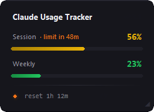

Your Claude usage limits, always in view
A free Windows tray app and widget that shows how much of your claude.ai and Claude Code usage limits is left: the 5-hour session and the weekly limit, for Claude Free, Pro and Max. No API key, nothing to set up.

What it shows
The same numbers as claude.ai's usage page, without opening it or interrupting a conversation.
Session and weekly limits
Your 5-hour session usage and your weekly usage in percent, refreshed every 30 seconds in the background.
Will the session last?
From your pace over the last 30 minutes, the widget tells you whether the session limit lasts until it resets, or when you would hit it.
Reset countdown
How long until the session limit resets, with a colour dot that shows how soon the refresh comes.
Colour-coded tray icon
Green, yellow, orange, red: the tray icon shows your session usage even when the widget is hidden.
Notifications
A desktop notification when a limit reaches 80 % and 95 % (configurable), and another one once it has reset.
Private by design
Reads your Firefox login read-only, talks only to claude.ai and GitHub's update check, and sends no telemetry.
How it works
The tracker uses the claude.ai login you already have in Firefox.
- Log in to claude.ai in FirefoxOnce is enough. Firefox does not need to stay open.
- Install and start the trackerIt sits in the system tray. Left-click the icon to show or hide the widget.
- Keep an eye on your limitsThe icon and widget update on their own; drag the widget anywhere and resize it.
Download
Every release on GitHub contains three downloads and a SHA256SUMS.txt with their checksums.
| Download | Size | For whom |
|---|---|---|
ClaudeUsageTracker-Setup-X.Y.Z.exerecommended | ~5 MB | Per-user install without admin rights, Start-menu entry, optional autostart, one-click signature-verified updates. Opens Microsoft's download if the .NET Desktop Runtime is missing. |
ClaudeUsageTracker-Portable-X.Y.Z.exe | ~80 MB | A single EXE with no installation and no dependencies; runs from anywhere, USB stick included. |
ClaudeUsageTracker.exe | ~26 MB | The original Python build, portable as well. |
Questions
Short answers to what people ask most.
How can I see my Claude usage limit without opening claude.ai?
Claude Usage Tracker shows it in the Windows system tray: the icon colour reflects your 5-hour session limit, and an optional always-on-top widget shows the session and weekly percentages and when the session limit resets. It updates every 30 seconds.
Does it show my Claude Code usage?
It shows the usage limits of your Claude plan, which claude.ai and Claude Code share. Whatever you use in Claude Code counts against the same 5-hour session and weekly limits, so the tracker shows how much is left for both. It does not read Claude Code's own logs.
Do I need an API key?
No. The tracker reads your existing claude.ai login from Firefox's cookie database, read-only. You only need to be logged in to claude.ai in Firefox; Firefox does not have to be open.
Why does it only work with Firefox?
Since Chrome 127, Chromium browsers encrypt cookies with App-Bound Encryption, which only the browser itself can decrypt. Firefox stores cookies unencrypted in SQLite, so it is the only browser that can be supported reliably.
Which data leaves my computer?
Only HTTPS requests to claude.ai, the same ones your browser already makes, and an anonymous version check to api.github.com once per app start (plus the release notes when a newer version exists), which can be turned off. No cookies or usage data leave your computer, and there is no telemetry.
Is this an official Anthropic tool?
No. It is an independent open-source project, not affiliated with or endorsed by Anthropic. It uses internal, undocumented claude.ai endpoints and may break without notice.